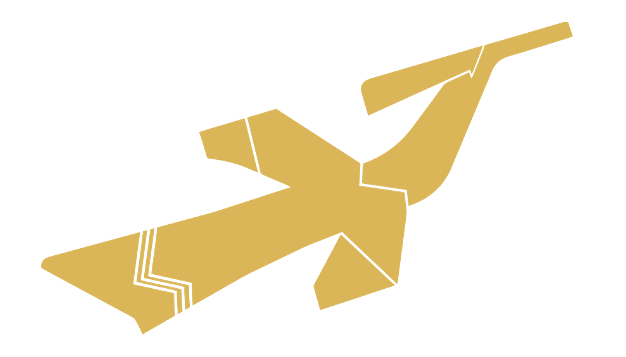

Bỏ qua, tới nội dung chính

LHU Attendance Tracker
Thời khóa biểu & Chuyên cần
Tổng quan
Thời khóa biểu
Hồ sơ & Cài đặt
Thời khóa biểu & Điểm danh
← Tuần trước
Tuần ...
Hôm nay
Tuần sau →
Có mặt
Vắng
Có phép
Sắp tới
Chưa điểm danh